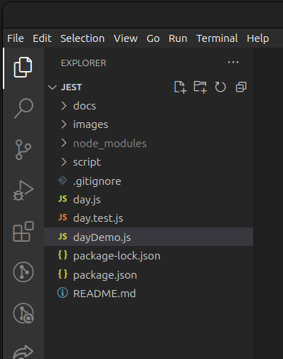
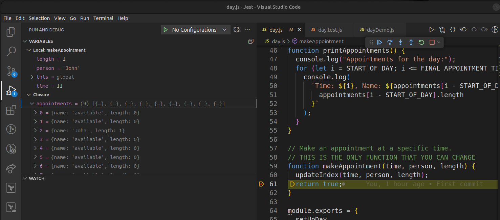

This workshop looks at writing unit tests in Jest.
This workshop goes with Sprint 3 of Structuring and testing data (See https://programming.codeyourfuture.io/structuring-data/sprints/3/
As a trainee you should:
You will need a computer with the latest versions of this software installed:
These are the versions I have installed:
$ node --version v21.2.0 $ npm --version 10.9.0
The following pages will take you through all the steps of the workshop.
makeAppointment functionmakeAppointment meets the specification.fork and then clone the workshop repository which you will find here: https://github.com/beaumoaj/jestWorkshop. Note this repository is currently private, I will make it public at the start of the workshop for you to fork it.Once you have forked the repository and cloned a copy to your computer, open the folder in VS Code. It should look like this:

This project contains the following files:
day.js which provides the functionality to store appointments during a given day.dayDemo.js contains brief demo of how to use the existing code in day.js.day.test.js contains the beginnings of a set of unit tests for day.js.package.json first and look at the dependencies (you will see jest) and look at the scripts - you will see demo and test. The scripts definitions allow you to run two actions, demo and test (don't run them yet).dayTest.js. It constains the following code:const {
setUpDay,
makeAppointment,
getAppointment,
getLengthOfDay,
getFirstAppointmentTime,
getLastAppointmentTime,
printAppointments,
} = require("./day");
// The following is just a demo of how to use the functions.
// Remember to call setUpDay() before making any appointments.
// If you want to debug a test, you can change the code below to copy the test code.
console.log("Day Demo. Setting up an empty day.");
setUpDay();
printAppointments();
console.log("Making an appointment for John at 11am.");
makeAppointment(11, "John", 1);
printAppointments();
day.js These are the functions you are allowed to call. Then we:setUpDay to initialise an empty appointment array,npm run demoYou should see the following output:
$ npm run demo > jest@1.0.0 demo > node dayDemo.js Day Demo. Setting up an empty day. Appointments for the day: Time: 9, Name: available, Length: 0 Time: 10, Name: available, Length: 0 Time: 11, Name: available, Length: 0 Time: 12, Name: available, Length: 0 Time: 13, Name: available, Length: 0 Time: 14, Name: available, Length: 0 Time: 15, Name: available, Length: 0 Time: 16, Name: available, Length: 0 Time: 17, Name: available, Length: 0 Making an appointment for John at 11am. Appointments for the day: Time: 9, Name: available, Length: 0 Time: 10, Name: available, Length: 0 Time: 11, Name: John, Length: 1 Time: 12, Name: available, Length: 0 Time: 13, Name: available, Length: 0 Time: 14, Name: available, Length: 0 Time: 15, Name: available, Length: 0 Time: 16, Name: available, Length: 0 Time: 17, Name: available, Length: 0Check the output is what you expected given the code in
dayDemo.js.Imagine that you have been asked to implement the function called makeAppointment. The starting code for this function can be found near the bottom of day.js and it's current implementation is:
// Make an appointment at a specific time.
// THIS IS THE ONLY FUNCTION THAT YOU CAN CHANGE
function makeAppointment(time, person, length) {
updateIndex(time, person, length);
return true;
}
day.js and find the makeAppointment function. Also find the function called updateIndex which is the function that changes the contents of the array containing all of the appointments in the day.
If you were to debug the code with a break point at the end of makeAppointment you will see the following:

Appointments made for 9am are stored in index 0, appointments for 10am are stored in index 1, appointments for 11am are stored in index 2.
Note that after we run the dayDemo and set an appointment for John at 11, index 2 of the appointments array has been changed to:
{ name: "John", length: 1 }
You can also see the values of the parameters length, person and time in the debugger.
The code for makeAppointment is only the starting point for the function. Before we can change anything, we need to know the specification for that function.
Here is the specification (ie the rules) for the makeAppointment function. The specification tells us how the function should work.
makeAppointment function will return true when the appointment was made successfully and return false when the appointment could not be made. There should be no exceptions generated.{ name: "available", ...}. The value of length is not relevant when the value of name is available. For example, if we wanted to make a 3 hour appointment for John, starting at 11, the result of printing the day should look like this: Making a three hour appointment for John at 11am. Appointments for the day: Time: 9, Name: available, Length: 0 Time: 10, Name: available, Length: 0 Time: 11, Name: John, Length: 3 Time: 12, Name: John, Length: 3 Time: 13, Name: John, Length: 3 Time: 14, Name: available, Length: 0 Time: 15, Name: available, Length: 0 Time: 16, Name: available, Length: 0 Time: 17, Name: available, Length: 0
return true (ie they are allowed)return false (ie they should not be allowed).The philosophy behind Test Driven Development (aka TDD) is that we should write a test first to check the functionality that we are about to write. We run the test and see that it fails. Then we implement the functionality and re-run the test and hopefully see that it passes.
day.test.js and have a look at the existing tests. There are three of them. Read the tests and try to understand what they do (do not run the tests yet).A good test should should have three parts:
expect to have happened has indeed happened.setUpDay works correctlyHere is the code to test setUpDay:
// test that all the appointments on an empty day are available
test("empty day", () => {
// nothing to set up
// perform the action we are testing
setUpDay();
// check the results are as we expected
const start = getFirstAppointmentTime();
const length = getLengthOfDay();
for (let time = start; time < length; time++) {
expect(getAppointment(time).name).toBe("available");
}
});
Here there is nothing to set up. The action is that we call the function setUpDay. Checking requires we look at the array to see that name property has the value available for each hour of the day.
Here is the test to make an appointment at the start of the day (at 9:00).
// test that we can make an appointment at the start of an empty day
test("Make Appointment at start of day", () => {
// set up everything ready for the test
setUpDay();
const time = getFirstAppointmentTime();
// perform the action
const result = makeAppointment(time, "John", 1);
// check the results are as expected
expect(result).toBe(true);
expect(getAppointment(time).name).toBe("John");
expect(getAppointment(time).length).toBe(1);
});
Here there are two things to set up, first we need to call setUpDay to ensure the day's appointments are all available, and then we find the time of the first appointment of the day. Next we perform the action which is to make the appointment and get the returned result. Finally we check that the returned result was true, the name associated with the assigned appointment is John and the length associated with the assigned appointment is 1.
npm run test
makeAppointment to ensure that the method returns false as described in the specification. Do not modify any existing function except for makeAppointment.You should work in pairs to complete the following steps. If you finish this step and have time to spare, repeat the steps and write tests for other scenarios.
makeAppointment to return true and write a test to ensure that everything it needs to do has been done correctly.makeAppointment to return false and write a test to ensure that nothing has changed in the appointment diary and that the returned value is false.